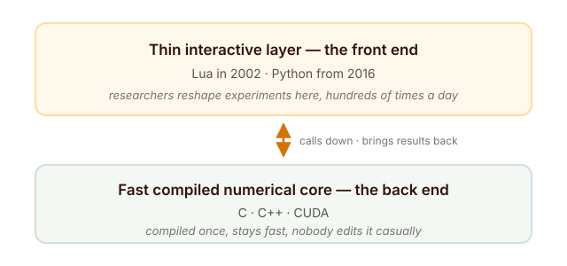
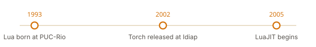
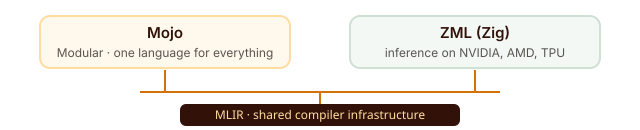

Introduction
Imagine you own a car. To change the radio station, you must take the engine apart, put it back together, and only then can you hear the new station.
That was machine-learning research in the early 2000s.
Not because anyone was lazy. It was simply the only option available. Researchers wrote their code in C and C++ — compiled languages. You write the code, a compiler turns it into instructions the machine understands, and then it runs. Extremely fast. That speed is why C and C++ still sit underneath almost everything in AI today.
But there is a price. Change one line, and everything stops while the computer rebuilds the whole program. Compiled languages are not built to be thought in.
Think of the difference between writing a letter and making a phone call. With a letter, you write it, post it, and wait days for a reply before you can fix one wrong sentence. With a phone call, you fix the mistake inside the same conversation.
Research is a conversation, not a letter. It is a loop: try something, look at the answer, change one thing, try again. Change the learning rate. Add a layer. Swap a function. Every one of those small changes meant a full rebuild — minutes of waiting, hundreds of times a day.
Go to Balogun Market in Lagos and watch a tailor work. Measure, cut, sew, try it on, adjust the sleeve — all in one afternoon. That is what research needs. A tailor who takes two weeks per fitting would lose the customer. And a compiler that takes minutes per change loses the thinking.
The loop you work in shapes the science you can do inside it.
Lua was created in 1993 by three researchers in Rio de Janeiro, to help Brazil work around a ban on importing foreign software. Twelve years later, it became the language of a machine-learning library.
Python was created in 1989 as a holiday project by a man who just wanted a nicer programming language. Twenty-seven years later, it became the language of the framework that trains the world’s AI.
Neither language was built for machine learning. Both ended up at the centre of it. And here is the strangest part: we are still doing it.
Torch, 2002: two layers, one idea
In 2002, three researchers at the Idiap Research Institute in Martigny, Switzerland — Ronan Collobert, Samy Bengio and Johnny Mariéthoz — decided to fix this. They released Torch: a modular machine learning software library, a free, BSD-licensed library that collected most of the best machine-learning algorithms of the day into one framework.
The important part of their solution was not a language. It was a division of labour.

Think of a buka. The big pot of rice is cooked once, in bulk, by the kitchen. The person serving plates it up differently for every customer — more stew here, less pepper there, extra meat for the next person. The heavy work happens once. The adjusting happens per customer, and it is fast.
Torch did exactly that to software: a heavy number-crunching engine written in C, cooked once, with a light scripting layer on top that a researcher could adjust all day long.
So the question the Torch team faced was never “what is the best programming language in the world?” It was much smaller and much more useful:
What is the best language to sit on top of a fast C engine, adding as little weight as possible, while letting a researcher work in real time?
That reframing is the whole trick. And more than twenty years later, Mojo would discover the exact same idea again.
The five languages Torch could have chosen
The bottom layer was never really a debate. For pure speed, C — and later CUDA — was the only serious answer. The open question was the top layer, and in 2002 several existing languages were genuinely in the running.
Think about how we move around Lagos or Abuja. A staff bus is fast and cheap, but it follows one fixed route and it will not turn because you asked it to. A keke napep is slower, but you can stop it anywhere and turn at any corner.
That is the trade-off between compiled and scripting languages. In 2002, the ideal would have been a keke that moved at bus speed. Here were the keke on offer:
Python
Already ten years old, and it even had a real numerical library called Numeric — the direct ancestor of NumPy. But in 2002 it had three problems for this job. Its C extension API was heavier to bind against than Lua’s, its interpreter used more memory, and it had no just-in-time compiler at all. The scientific ecosystem we now take for granted was still years away.
Perl and Tcl
Both mature. Both embeddable. Both doing real production work in serious systems. But neither was designed around the clean, minimal C-embedding API that Lua was built for from day one. For a library whose entire selling point was “almost no weight on top of C,” that mattered.
Java
Genuinely fast by 2002, thanks to the HotSpot JIT compiler. But the Java Virtual Machine used a lot of memory, took time to start, and paused unpredictably to clean up after itself — bad news for tight numerical loops. And connecting Java to native C and CUDA code was far clumsier than Lua’s C API.
Ruby
Released in 1995, with no JIT of any kind for years afterward, and if anything slower than Python for numerical work. Ruby was a serious contender — but it was built for programmer happiness, not for speed, and it lost on exactly that.
And Lua
A language built to be tiny, easy to embed, and almost frictionless to connect to C. It added barely any weight to Torch’s C engine while still giving researchers a live, interactive environment.
Nothing about Torch’s idea required Lua. Lua simply offered the best combination available at that moment: small, easy to embed, and out of C’s way.
But Lua was missing something that would matter enormously fourteen years later. It had no ecosystem. No NumPy. No pandas. Almost nobody outside game scripting was using Lua for numbers, so nobody built those libraries for it.
Losing the race for this job said nothing about any of these languages. Every one of them went on to dominate somewhere else:
- Python — the default language of data, science, and now AI.
- Java — still one of the most widely used languages on earth: Android apps, large enterprise systems, and the whole JVM data stack of Hadoop and Spark.
- Ruby — web applications, through Ruby on Rails.
- Perl — bioinformatics and system administration.
- Tcl — chip design.
- Lua — game scripting, and the insides of other programs.
Torch was looking for a front end to sit on a C engine. That is a remarkably narrow job, and a language can be genuinely world-class without being right for it.
Where Lua came from, and why that mattered
Lua’s own story has nothing to do with machine learning. It is nearly a decade older than Torch, and it starts with a trade policy.
In 1993, three researchers at Tecgraf, the Computer Graphics Technology Group at the Pontifical Catholic University of Rio de Janeiro, created Lua: Roberto Ierusalimschy, Luiz Henrique de Figueiredo and Waldemar Celes.
Through the 1980s, Brazil had a “market reserve” — a policy that restricted imports of foreign computer hardware and software, in order to grow a local technology industry. Engineers at Petrobras, the state oil company, needed flexible tools for processing and visualising their data. They could not easily buy the commercial software that existed. So Tecgraf built its own.
If you have ever watched a Nigerian industry build its own solution because importing was impossible or too expensive, you already understand the mood in that room. The existing scripting languages were judged too slow, too hard to move between systems, or too awkward to connect to C.
Lua’s answer was a language that was fully ANSI C compliant, small, and designed from the ground up to extend C programs.
The language underneath 2002’s most advanced machine-learning library was a workaround for an import ban.
And nobody owns Lua. There is no company behind it and no foundation holding the keys. It is free, open-source, MIT-licensed software, still cared for at the same Brazilian university by essentially the same team — Ierusalimschy has led its design for over thirty years.
Lua lost nothing by not becoming the language of AI. It became something arguably more permanent: the language inside other programs. World of Warcraft addons, Roblox, Neovim, Redis and Nginx (through OpenResty) all embed it, and Cloudflare runs it across an enormous share of its edge traffic. It was designed for machines with very little memory, which is why it keeps showing up in embedded devices.
Lua was never trying to be the language you write a whole application in. It was built to live inside somebody else’s program — which is exactly why Torch picked it in the first place, and exactly why it is still working today.

2011: the gap closes
Lua had one real weakness as a front end: speed. A scripting language sitting on top of compiled C always costs you something.
That weakness did not survive LuaJIT, Mike Pall’s just-in-time compiler for Lua, in continuous development since 2005. By the early 2010s, the Torch team had rewritten the library as Torch7 on top of LuaJIT — and now the thin scripting layer ran at speeds close to native C.
Lua’s last real gap against a compiled language had closed. Torch7 also brought the library to a much wider audience, and it is the version most researchers still remember. By any fair measure, it was excellent engineering.
And then, in 2016, it was replaced.
2016: PyTorch changes its mind
PyTorch was released in September 2016 by Adam Paszke, Sam Gross, Soumith Chintala and Gregory Chanan at Facebook AI Research.
If you have followed the story this far, the surprising part is what PyTorch kept. It kept the shape. PyTorch was built on Torch’s existing C++ engine — fast core underneath, light scripting layer on top. The two-layer idea survived completely intact.
What changed was the layer on top. Lua out. Python in.
Three things drove that decision.
1. The libraries were already there
By 2016, Python had already become the default language of scientific computing, on the strength of NumPy, SciPy and pandas. Lua’s use outside Torch was mostly limited to scripting inside other programs, with games being the best-known example. This is what finally sank Lua — not a flaw in the language itself, but the absence of a scientific toolkit around it.
2. Nobody had to learn a new language
Making every new researcher learn a second language before they could touch the framework was pure friction. Wrapping the same C++ engine in Python meant new users could start with tools they already knew. You do not ask a new staff member to learn your village dialect before they are allowed to use the photocopier.
3. You could see your code actually run
This one is subtle but it changed everything. Python made it natural to build the computation step by step as the code ran, instead of defining the whole calculation up front as a separate static graph — which is the approach TensorFlow launched with on 9 November 2015. The practical result: fixing a PyTorch model felt like fixing ordinary Python code, because that is exactly what it was.
Torch picked the fastest front end. PyTorch picked the one every researcher already had on their laptop.
The same switch is happening again right now
If that feels like old history, here is the part that should not. The exact same manoeuvre — keep the idea, swap the language underneath — is being repeated in 2026, by people who would probably be surprised to hear they are re-running the Torch decision.
Bun: from Zig to Rust
Bun is a good example to start with because most people meet it without knowing what it is. Bun is a JavaScript runtime — the engine that executes JavaScript outside a browser, doing the job Node.js does. It also folds in a package manager, a bundler and a test runner, all in one fast binary. It is a drop-in replacement for Node.js, and its CLI gets over 22 million downloads a month. If you have used Claude Code or OpenCode, you have run Bun.
Bun was written in Zig, a small modern language designed as a better C. Its creator, Jarred Sumner, wrote the first version alone in a cramped Oakland apartment in about a year, with no AI help at all.
Then two things happened. In December 2025, Anthropic acquired Bun — its first acquisition. The reason was blunt and practical: Claude Code ships to millions of users as a Bun executable. As Sumner put it, if Bun breaks, Claude Code breaks.
And in 2026, Bun was rewritten in Rust. Bun 1.4, the first stable release running the new code, shipped on 20 August 2026.
The reasoning matters far more than the event, because it was not a verdict on Zig. Bun’s bug list was long and full of crashes — memory problems from running a garbage-collected language inside manually-managed memory, which is an unusual thing for software to need and something no language is really designed for. In Sumner’s words:
Our bugfix list felt bad and I was tired of going to sleep worrying about crashes in Bun. I don’t blame Zig for that… We wouldn’t have gotten this far if not for Zig, and I’ll always be grateful.
Zig did not suddenly become a bad language. The project’s constraints changed — it went from a solo experiment to infrastructure that a billion-dollar product depended on — and a different language fitted the new constraints better.
The rewrite itself is a sign of the times: Claude was pointed at 1,448 Zig files and told to produce Rust, with each file handled by one implementation agent and two adversarial review agents. What made it possible was not raw speed but the confidence that a rewrite could now be attempted at all.
TypeScript: the same language, a new one underneath
The second example is stranger, because from the outside nothing changed at all. TypeScript still looks and behaves exactly the same. What moved was the language its compiler is written in.
In March 2025, Anders Hejlsberg and the TypeScript team announced they were porting the compiler to Go. TypeScript 7.0 shipped on 8 July 2026, and the numbers were not marketing: command-line builds got about 10x faster (VS Code’s 1.5 million lines went from 77.8 seconds to 7.5), editor project load went from 9.6 seconds to 1.2, and memory use roughly halved.
Why bother? Because TypeScript’s compiler had stopped scaling to the largest codebases — and because AI coding tools need huge amounts of semantic information available at very low latency. The bottleneck was no longer the language people write; it was the speed of the machinery underneath it.
And why Go rather than Rust, which is the more fashionable answer? Because of the shape of the existing code. TypeScript’s compiler is built from heavily interconnected, cyclic data structures sharing mutable state. Go handles that naturally and has the shared-memory concurrency to parallelise it; Rust’s ownership rules would have forced a redesign of the compiler before a single line could be ported. They picked the language that fitted the structure, not the language that topped the popularity poll.
Three switches, fourteen years apart:
- 2016 — Torch: keep the C engine, swap the scripting layer from Lua to Python.
- 2026 — Bun: keep the JavaScript runtime, swap the implementation from Zig to Rust.
- 2025–26 — TypeScript: keep the language users write, swap the compiler from TypeScript to Go.
In all three cases, what users type either stayed the same or got closer to what they already knew. In all three, the swap was forced by a specific practical constraint — an absent ecosystem, a crash list, a scaling wall. And in none of them did anybody say “this other language is simply better.”
The pattern is the point. Languages do not get replaced for being bad. They get replaced when a project’s needs change and a different language fits the new shape better.
Why Python, and not R, MATLAB or Julia
Back to 2016, then. Python did not win by being the best language at mathematics. It won because each rival had one specific, structural reason it could not do this particular job.
| Language | Why it could not do the job |
|---|---|
| R | Built by statisticians to analyse tables of data, and it shows. The way it copies data in memory, its object system, and its design around two-dimensional data frames made the huge grids of numbers and graphics-card memory handling that deep learning needs feel glued on rather than built in. |
| MATLAB | Strong early popularity in universities, thanks to friendly matrix syntax and mature numerical routines. But MathWorks sells it under a proprietary licence, charged per user — which could not survive how research scaled after 2012: thousands of disposable machines in the cloud, and code shared openly between labs. |
| Julia | On paper, exactly the right technical shape — the speed of C without having to write C. But it was simply too young. In 2016 it had not even reached version 1.0 (that came on 8 August 2018), its APIs were still changing between releases, and it had no mature way to talk to CUDA or C++. |
| Python | None of those problems, plus one advantage none of the others had: it was useful for everything else too. It could run web servers, talk to databases and drive data pipelines. A team could build the whole path from research to production in one language. |
Read that table as a list of misfits for one specific job, not a ranking. Being ruled out of deep learning is not the same as being ruled out of everything else.
- R is still the language of statistics, with one of the most respected research ecosystems anywhere — CRAN, a curated library of tens of thousands of packages, acts as its gatekeeper. In medicine its position is close to untouchable: CRAN maintains a task view for clinical trial design, monitoring and reporting, and regulated pharmaceutical work is increasingly built on R.
- MATLAB is still the standard in control engineering and signal processing, and Simulink is where automotive and aerospace teams have built and tested embedded software for roughly two decades. Code modelled there gets generated straight into production vehicles. A toolchain that carries that kind of safety certification does not get swapped out casually.
- Julia is the centre of scientific machine learning through SciML, its ecosystem for solving differential equations, and it does serious work on high-performance computing at national laboratories. Fittingly, its own community describes it as solving the two-language problem — for scientific computing.
Nobody is going to dethrone these three. They simply stopped being the fastest route to a trained neural network.
Two more things then let Python actually win instead of merely qualify.
The spare-parts rule
Why does almost everyone in Nigeria drive a Toyota? Not because it is the nicest car. Because there is a mechanic on nearly every street and spare parts in every market. You buy the car you can keep on the road. Buy something exotic, and every small repair means ordering from abroad and waiting weeks.
Software works the same way. The language is the car. The libraries are the spare parts.
Lua was an excellent car with no parts anywhere. Python was the Toyota.
NumPy was the first real part. Built by Travis Oliphant — work starting in 2005 and released in 2006 by combining two earlier libraries, Numeric and NumArray — it gave Python something R and MATLAB never had in the open: one shared way to store a grid of numbers in memory, which SciPy, pandas and scikit-learn could all build on. pandas followed from Wes McKinney in 2008.
So a full data-science toolkit already existed before deep learning took off. That timing was not luck. It was fifteen years of work landing exactly when it was needed.
And Python was easy to plug fast code into. Connecting performance-critical C and CUDA code to Python was comparatively simple — exactly what PyTorch needed in order to expose its C++ engine through a clean Python surface. The very thing that made Python second-best in 2002 made it the obvious choice in 2016.
The ground under everything: C, C++ and CUDA
Below all of this sits a layer that never competes for attention, because it never had a marketing budget or a conference keynote.
Think of a road. C is the road itself — the surface everything drives on. C++ is that road with lanes, signs and traffic rules added on top. CUDA is the express lane reserved for the heavy trucks — and only certain trucks are allowed in.
C was created by Dennis Ritchie at Bell Labs in 1972, mainly so that the Unix operating system could be rewritten in a portable language instead of assembly. No company owns it; it is defined by an international ISO standard maintained by committee. It is still the language that everything else in this story eventually compiles down through or connects to.
C++ began as “C with Classes,” a project Bjarne Stroustrup started at Bell Labs in 1979 to add object-oriented features to C without losing its speed or its ability to talk directly to hardware. The first version was in use inside AT&T by August 1983, the name C++ arrived around the same time, the first commercial version — Cfront 1.0 — shipped on 14 October 1985, and the first international standard was ratified in 1998. Like C, no company owns it. It is the language behind the actual number-crunching engines of Torch, PyTorch and most other frameworks.
CUDA is not quite a language in the same sense, but a platform and programming model for running code on NVIDIA graphics cards. NVIDIA released it in 2006–2007 so that ordinary software could use hardware that had previously only drawn pictures on screen. Unlike everything else here, CUDA is proprietary NVIDIA technology and only runs on NVIDIA hardware. It is the layer every framework in this story ultimately calls down to.
So the full stack, from top to bottom, looks like this: researcher’s idea → Python (or Lua) → C++ engine → C → CUDA → silicon. Every layer earned its place by being the best available option for one narrow job. And not one of them was designed with the others in mind.
Famous everywhere except here
Three languages from the 1980s and 90s are worth mentioning, because together they prove the whole point. All three were widely used, beautifully designed, and completely absent from the AI story — not because they were weaker languages, but because they were built for other jobs and were already busy winning them.
Tcl — 1988, John Ousterhout, UC Berkeley. He created it while building tools for designing computer chips, so that every tool would not need its own custom scripting language. That is exactly the problem Lua solved better, and Tcl is one of the languages Lua’s creators openly judged too slow and too awkward to connect to C. Tcl did not die, though. It is the scripting layer underneath almost every major chip-design tool in the world, including Synopsys Design Compiler and Cadence Innovus. Chip designers still learn it today.
Perl — 1987, Larry Wall. Built as a practical scripting language for Unix, mainly to make report processing easier. Wall is a linguist by training, which is why the design motto is “there is more than one way to do it” — the thinking of a natural language, not a machine. It was another of the alternatives Lua’s creators rejected. Perl survives in older system administration work and in bioinformatics pipelines, and its intended successor, Perl 6, split off to become a separate language called Raku.
Ruby — 1995, Yukihiro “Matz” Matsumoto, Japan. Built deliberately for programmer happiness, borrowing ideas from Perl, Smalltalk, Eiffel, Ada and Lisp. Of the three, Ruby came closest to this story: it was a genuine contender for Torch’s front end in 2002 and lost on speed. Ruby on Rails is still a serious web framework. The language did not fail. It just won a different race.
- Tcl owns chip design. Synopsys, Cadence and Siemens flows all drive their tools through Tcl, and every script in a semiconductor company’s regression suite is written in it. Replacing it would mean rewriting every script in every design flow on earth at the same time. Nobody is planning that.
- Perl still runs an enormous amount of the world’s system administration, and much of the older bioinformatics pipeline code. For years its regular-expression engine was the best in any language, which is exactly why so much text-processing infrastructure was built on it — and still is.
- Ruby runs major production web applications. Shopify handles over 80,000 requests per second on Rails, and GitHub, Basecamp, Zendesk and Instacart all still run it. For building a serious web product quickly, it remains one of the best tools in existence.
So this is not a list of failures. It is a list of languages that were winning other fights.
It is like three very good traders in the market — known, respected, busy all day — who simply never stocked the one item this whole market came to buy. None of them run tensors, and being popular has never been something that transfers from one job to another.
Who owns a language?
One quiet pattern runs through every entry in this story, and it is the part most histories skip.
The languages that became infrastructure ended up owned by neutral non-profit institutions — not by the companies that made them famous.
- C and C++ — no corporate owner at all; defined by international standards committees.
- Python — the Python Software Foundation, founded in 2001, and since 2018 run by a steering council rather than one person.
- R — the R Foundation, with CRAN as the authority for its packages.
- Julia — the Julia Language organisation, with commercial support from JuliaHub.
- Rust — the Rust Foundation, formed on 8 February 2021 with founding members including AWS, Google, Huawei, Microsoft and Mozilla.
- PyTorch itself — on 12 September 2022, Meta handed PyTorch to the Linux Foundation, creating the PyTorch Foundation with AMD, Amazon, Google Cloud, Meta, Microsoft Azure and NVIDIA as founding members.
And Lua, the language that carried this whole story for fourteen years? It never got one. It stayed with its three creators at a Brazilian university.
That is not automatically a bad thing. Lua is still free, still maintained, still used. But it tells you something. Frameworks get handed to neutral foundations when an entire industry depends on them and no single company can be trusted to hold the keys. Think of a market association: when the whole market relies on something, no one trader gets to control it.
Lua never reached that point, because the ecosystem around it never reached the point of mattering to an industry.
A language becomes infrastructure when people stop asking who owns it.
2026: the problem nobody has solved
Here is where the story gets honest, because the problem Torch spotted in 2002 is still unsolved.
Remember the shape: a fast compiled core, with a friendly scripting layer on top. That means you still write two languages to do one job. Python for the model, C++ or CUDA for anything that must be fast. Every serious PyTorch user eventually hits this wall — you drop into a custom kernel, or write your own CUDA extension, and suddenly you are maintaining two codebases, in two languages, with two sets of tools.
It is like working in a Nigerian office. The memo goes out in English, but the moment you need someone to really understand the numbers, you switch to your own language. You need both. And every switch costs you something.
This is called the two-language problem, and as of 2026 three different groups are attacking it from three different directions.
Rust — make the bottom layer better
Started as a personal project by Graydon Hoare in 2006, taken up by Mozilla from 2009, and stable since version 1.0 on 21 May 2015. Rust aims at the same territory as C++ — speed with safety — which makes it a natural fit for the bottom of the stack. Frameworks like Candle and Burn are building deep-learning tools directly in Rust, with a focus on lightweight inference on small and edge devices rather than training. This is the least ambitious of the three answers: it does not try to remove the second language, it tries to make that language better.
Mojo — collapse the two layers into one
Announced by Modular in May 2023 and led by Chris Lattner, the creator of LLVM and Swift, Mojo is the most direct attack on the problem. The goal is one language that is as easy to write as Python but can also write hardware-level code — a single language for the whole stack. Technically it is built on MLIR, a compiler framework that grew out of LLVM. Adoption is still early and it is not compatible with the whole Python ecosystem, but Modular open-sourced Mojo’s standard library in March 2024 under the Apache 2.0 licence. The intention is unmistakable: this is Torch’s 2002 idea, except the ambition is to eventually not need two languages at all.
Zig — an honest C replacement, with MLIR underneath
Announced by Andrew Kelley in February 2016, and aiming to replace C rather than C++ — a different job from Rust’s. Its priorities are full compatibility with C, no hidden control flow, no hidden memory allocations, and excellent cross-compilation. It is governed by the Zig Software Foundation, a non-profit, and as of 2026 it still has not reached version 1.0.
Its entry into the AI story is ZML, a machine-learning framework for Zig that — like Mojo — is built on MLIR, alongside XLA. It focuses on inference rather than training, and targets NVIDIA, AMD and Google TPU hardware.
Mojo and ZML are built on the same compiler foundation — MLIR — yet they are different languages, built by different people, attacking the same problem from opposite ends of the stack.
Two separate teams betting on one piece of technology is usually a sign that the problem is real, and that nobody has found the answer yet.

For all of that activity, one fact should calm any prediction: as of 2026, Python still dominates model training. The two-language problem has three credible challengers and no winner.
What the pattern tells us
Look back across more than fifty years and the lesson is not the simple one. It is not “Python won because Python was better.” It is narrower, and far more useful.
- You do not pick a language for a job. You pick one for a job at a moment. R, MATLAB and Julia were not worse languages than Python. Each was ruled out by one specific constraint of that specific time — a data model, a licence, a release date.
- Structure outlives popularity. C++ has never been anyone’s favourite language, and it is still the load-bearing wall of modern AI. Tcl, Perl and Ruby were all more pleasant to write at some point. None of them run tensors.
- Ecosystems beat languages. Lua lost to Python not because it was slow — LuaJIT fixed that — but because nobody ever built a NumPy for it. The library you can import matters more than the syntax you type.
- The right design at the wrong time loses to an adequate design at the right time. Julia is the cleanest example in this entire history.
- And the core problem was never solved. Torch’s 2002 division of labour is still the shape of PyTorch in 2026. We have simply stopped noticing that we write two languages to do one job.
- Language choices are no longer one-way doors. For most of this history, picking a language for a serious project was effectively permanent. Bun’s creator said it best after swapping Zig for Rust in 2026: “Until very recently, programming language choice was a one-way decision for a project like Bun.” That is quietly ceasing to be true. When a 1,448-file rewrite becomes a project someone can actually attempt, the cost of changing your mind drops — and a decision that used to be permanent starts to look like a decision you can revisit.
No single language had to win everything. That was never the requirement.
Seen that way, the future looks less like a race to replace Python and more like a slow widening: one language for exploring ideas, several for running them fast, and the line between them always moving. Which is exactly what Mojo, Rust and Zig are arguing about — without agreeing on the answer.
This article is the trunk of the story. Each language below gets its own deep dive, published over the coming weeks:
- Lua — the import ban, Tecgraf, and the language chosen to carry Torch
- Python — Christmas 1989, ABC, and the climb to becoming the default
- R, MATLAB & Julia — three rivals, three structural reasons
- C, C++ & CUDA — the invisible layer everything runs on
- Tcl, Perl & Ruby — popular, and nowhere near the tensors
- Rust, Mojo & Zig — three answers to the two-language problem
Which language did you start with, and how did you end up in Python? I am curious whether people here came to Python through science, or came to science through Python. Let me know in the comments below — and if you found this useful, share it with someone who is starting out.